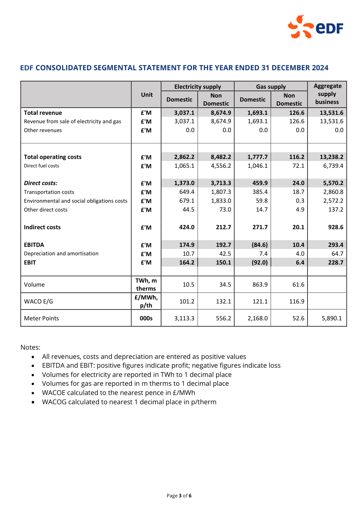
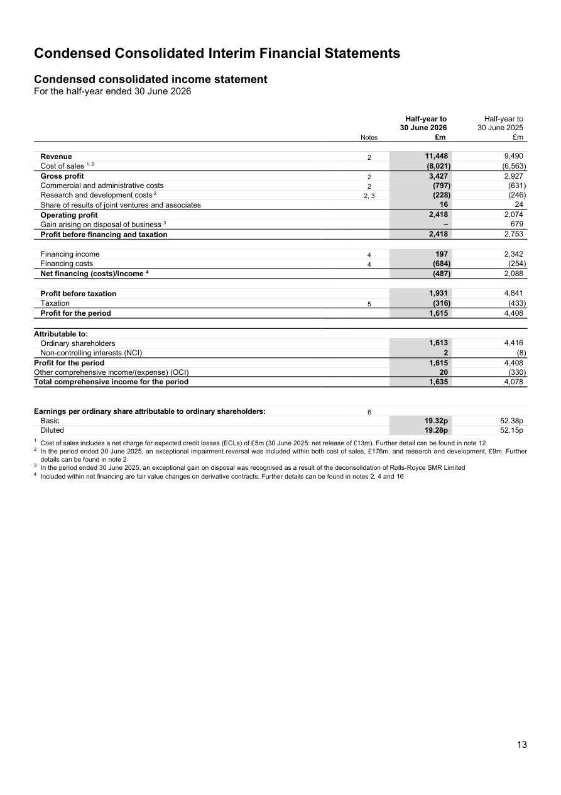
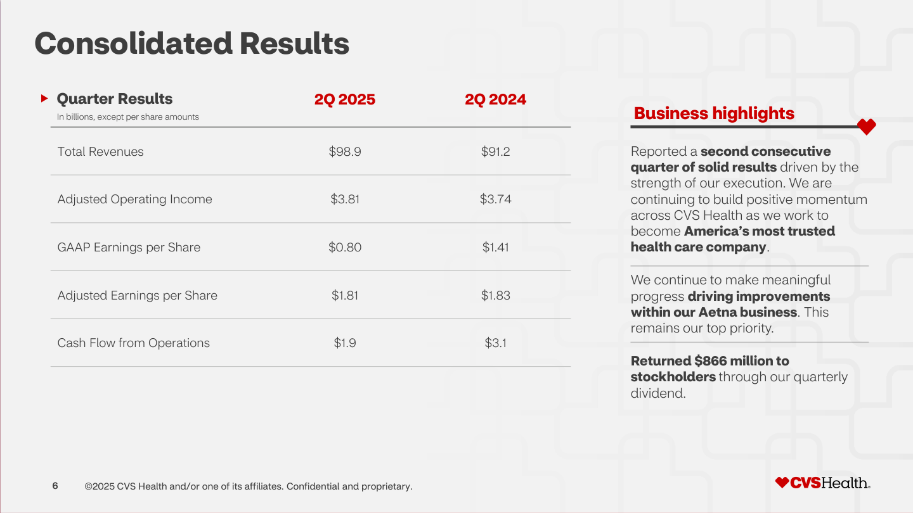
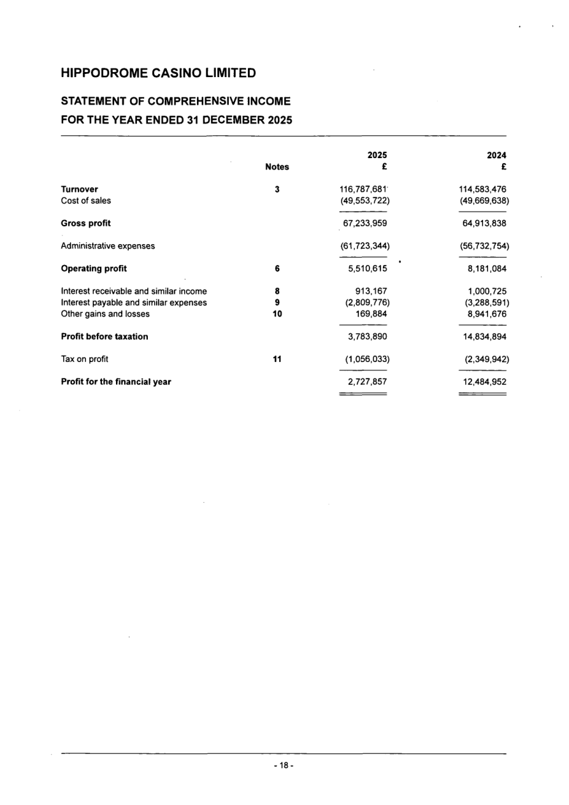

Recovery comparison — 24 November 202624 NOVEMBER 2026 · PRELIMINARY SOURCE-REVIEWED CASE STUDY
Alternative parsing fully recovers 3 of 6 selected errors
8 records · 4 documents · 3 corrected · 0 new errors · 3 still need repair
MinerU OCR → saved PyMuPDF4LLM output. No fresh inference or new scoring model. Two update slides · CSV · Full evidence JSON
Scores are existing uncalibrated association model outputs, not correctness probabilities. Labels and this review are assistant-authored, not independently human-verified.
Selection and correctness contract
Correct numeric content, separately bound row and column, and usable unit context. Multiple source rows inside one HTML cell do not pass without a separate repair step.
Across all 50 existing records: 10 low-score errors, 0 low-score fully-correct records, 10 high-score errors and 30 high-score correct records (low < 0.5; high ≥ 0.5). Selected A–D: four low-score errors; E–F: two high-score errors; G–H: two high-score correct controls.
There is no low-score fully-correct example to include. Some EDF numbers are numerically right with low association scores, but their associations are wrong; these are not false alarms for association. Three selected EDF records each combine two source values: 8 extraction records cover 11 source numeric values.
Selection uses already-known outcomes. Related cells share table-level errors. This comparison is illustrative, not a random sample, blind test, confidence calibration, or measured success rate on unseen documents. PyMuPDF4LLM also supplied agreement features in the existing model, so the alternative is not independent evidence for validating the score.
Actual recovery comparison
Strict correctness: 2/8 → 5/8. Three of six original errors become fully correct; the other three improve numeric readability but remain merged. No new errors among the two originally correct controls.
High scores did accompany incorrect associations: both selected Rolls-Royce records score 0.8837 despite unresolved year bindings. Their digits are already correct. The five original numeric errors in the full dataset have no out-of-family numeric score; this experiment does not demonstrate a high-scoring wrong number.
A — EDF total revenue
edf_2024:01 · physical page 3 · association score 0.0099
· numeric score unavailable (failed training fold)
Reference: 3,037.1 · Total revenue · Electricity supply / Domestic · GBP millions
Original: MinerU OCR
Value: 3,037.1
Row: Total revenueRevenue from sale of electricity and gasOther revenues
Header: Electricity supply / Domestic
<td colspan="1" rowspan="1">3,037.1</td>
Fully correct? No
Alternative: PyMuPDF4LLM
Value: 3,037.1
Row: Total revenue
Header: Electricity supply / Domestic
<td>3,037.1</td>
Numeric content readable: Yes; association: Yes;
separately usable unit context: Yes.
Fully correct? Yes
Source p3: total revenue, electricity supply / domestic, GBP millions, 3,037.1. Original row label and unit span three concepts. Retry isolates Total revenue, its unit, and the two-level column header.
Inspect original document page

Saved page exports: MinerU OCR ·
PyMuPDF4LLM
B — EDF electricity / domestic
edf_2024:06 · physical page 3 · association score 0.0099
· numeric score unavailable (failed training fold)
Reference: 3,037.1 / 0.0 · Revenue from sale of electricity and gas / Other revenues · Electricity supply / Domestic · GBP millions per original row
Original: MinerU OCR
Value: 3,037.10.0
Row: Total revenueRevenue from sale of electricity and gasOther revenues
Header: Electricity supply / Domestic
<td colspan="1" rowspan="1">3,037.10.0</td>
Fully correct? No
Alternative: PyMuPDF4LLM
Value: 3,037.1 ↵ 0.0
Row: Revenue from sale of electricity and gas Other revenues
Header: Electricity supply / Domestic
<td>3,037.1<br/>0.0</td>
Numeric content readable: Yes; association: No;
separately usable unit context: No.
Fully correct? No
Source p3 shows separate revenue-from-sales and other-revenues rows: 3,037.1 and 0.0. Retry inserts an explicit HTML line break between the numbers, but both row labels and both units still occupy one cell. Numeric content improves; no separate financial records are produced.
Inspect original document page
Saved page exports: MinerU OCR ·
PyMuPDF4LLM
C — EDF electricity / non-domestic
edf_2024:07 · physical page 3 · association score 0.0099
· numeric score unavailable (failed training fold)
Reference: 8,674.9 / 0.0 · Revenue from sale of electricity and gas / Other revenues · Electricity supply / Non Domestic · GBP millions per original row
Original: MinerU OCR
Value: 8,674.90.0
Row: Total revenueRevenue from sale of electricity and gasOther revenues
Header: Electricity supply / NonDomestic
<td colspan="1" rowspan="1">8,674.90.0</td>
Fully correct? No
Alternative: PyMuPDF4LLM
Value: 8,674.9 ↵ 0.0
Row: Revenue from sale of electricity and gas Other revenues
Header: Electricity supply / Non Domestic
<td>8,674.9<br/>0.0</td>
Numeric content readable: Yes; association: No;
separately usable unit context: No.
Fully correct? No
Source p3: revenue-from-sales 8,674.9; other revenues 0.0. Retry preserves both numbers with a line break, but the two rows and units remain bundled. It fails the same strict contract as B.
Inspect original document page
Saved page exports: MinerU OCR ·
PyMuPDF4LLM
D — EDF gas / domestic
edf_2024:08 · physical page 3 · association score 0.0099
· numeric score unavailable (failed training fold)
Reference: 1,693.1 / 0.0 · Revenue from sale of electricity and gas / Other revenues · Gas supply / Domestic · GBP millions per original row
Original: MinerU OCR
Value: 1,693.10.0
Row: Total revenueRevenue from sale of electricity and gasOther revenues
Header: Gas supply / Domestic
<td colspan="1" rowspan="1">1,693.10.0</td>
Fully correct? No
Alternative: PyMuPDF4LLM
Value: 1,693.1 ↵ 0.0
Row: Revenue from sale of electricity and gas Other revenues
Header: Gas supply / Domestic
<td>1,693.1<br/>0.0</td>
Numeric content readable: Yes; association: No;
separately usable unit context: No.
Fully correct? No
Source p3: revenue-from-sales 1,693.1; other revenues 0.0. Retry preserves both numbers with a line break, but the two rows and units remain bundled. It fails the same strict contract as B.
Inspect original document page
Saved page exports: MinerU OCR ·
PyMuPDF4LLM
E — Rolls-Royce revenue / 2026
rolls_royce_2026h1_release:01 · physical page 13 · association score 0.8837
· numeric score 0.9958
Reference: 11,448 · Revenue · Half-year to 30 June 2026 £m · GBP millions
Original: MinerU OCR
Value: 11,448
Row: Revenue 2
Header: Half-year to Half-year to30 June 2026 30 June 2025Notes £m £m
<td colspan="1" rowspan="1">11,448</td>
Fully correct? No
Alternative: PyMuPDF4LLM
Value: 11,448
Row: Revenue
Header: Half-year to 30 June 2026 £m
<td>11,448</td>
Numeric content readable: Yes; association: Yes;
separately usable unit context: Yes.
Fully correct? Yes
Source physical p13: revenue 11,448 under half-year to 30 June 2026, GBP millions. Original numeric content is right but the shared header spans both years. Retry explicitly binds this number to 2026.
Inspect original document page

Saved page exports: MinerU OCR ·
PyMuPDF4LLM
F — Rolls-Royce cost of sales / 2026
rolls_royce_2026h1_release:03 · physical page 13 · association score 0.8837
· numeric score 0.9968
Reference: (8,021) · Cost of sales · Half-year to 30 June 2026 £m · GBP millions
Original: MinerU OCR
Value: (8,021)
Row: Cost of sales 1, 2
Header: Half-year to Half-year to30 June 2026 30 June 2025Notes £m £m
<td colspan="1" rowspan="1">(8,021)</td>
Fully correct? No
Alternative: PyMuPDF4LLM
Value: (8,021)
Row: Cost of sales 1, 2
Header: Half-year to 30 June 2026 £m
<td>(8,021)</td>
Numeric content readable: Yes; association: Yes;
separately usable unit context: Yes.
Fully correct? Yes
Source physical p13: cost of sales (8,021) under half-year to 30 June 2026, GBP millions. Retry preserves the negative value and restores the separate 2026 header. The trailing 1, 2 in the label are source footnote markers.
Inspect original document page
Saved page exports: MinerU OCR ·
PyMuPDF4LLM
G — CVS total revenues / 2Q 2025
cvs_2025q2:01 · physical page 6 · association score 0.9661
· numeric score 0.9944
Reference: $98.9 · Total Revenues · 2Q 2025 · USD billions
Original: MinerU OCR
Value: $98.9
Row: Total Revenues
Header: 2Q 2025
<td>$98.9</td>
Fully correct? Yes
Alternative: PyMuPDF4LLM
Value: $98.9
Row: Total Revenues
Header: 2Q 2025
<td>$98.9</td>
Numeric content readable: Yes; association: Yes;
separately usable unit context: Yes.
Fully correct? Yes
Source p6: Total Revenues, 2Q 2025, $98.9 billion. Both parsers preserve the value, row and period; the retry retains 'In billions, except per share amounts' despite surrounding OCR noise.
Inspect original document page

Saved page exports: MinerU OCR ·
PyMuPDF4LLM
H — Hippodrome turnover / 2025
hippodrome_2025:01 · physical page 20 · association score 0.9661
· numeric score 0.9868
Reference: 116,787,681 · Turnover · 2025 £ · GBP
Original: MinerU OCR
Value: 116,787,681
Row: Turnover
Header: 2025 £
<td>116,787,681</td>
Fully correct? Yes
Alternative: PyMuPDF4LLM
Value: 116,787,681
Row: Turnover
Header: 2025 £
<td>116,787,681</td>
Numeric content readable: Yes; association: Yes;
separately usable unit context: Yes.
Fully correct? Yes
Source physical p20 (printed p18): Turnover 116,787,681 under 2025, GBP. Both parsers retain the number, row, year and currency.
Inspect original document page

Saved page exports: MinerU OCR ·
PyMuPDF4LLM
Runtime and provenance
No fresh parser latency was measured. These are saved full-document PyMuPDF4LLM runtimes from Sam's September 30 runs; they are not per-cell retry times or measurements on this machine.
| Document | Pages | Historical full-document runtime |
|---|
| edf_2024 | 6 | 3.989 s |
| rolls_royce_2026h1_release | 52 | 30.591 s |
| cvs_2025q2 | 12 | 8.071 s |
| hippodrome_2025 | 39 | 75.985 s |
Historical timing includes child-process startup; excludes downloads, export and scoring. Original PDFs are not copied into this comparison; the existing source-page renders were visually checked against the saved reference labels. Input hashes: provenance.json. Manual decisions: manual_review.json.
The local evidence build took 0.190 seconds before report rendering. It is file processing time, not extraction latency.